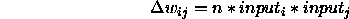
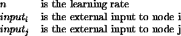
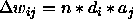

This rule is presented in detail in chapter 17 of [RM86]. In general the delta rule outperforms the Hebbian learning rule. The delta rule is also less likely so produce explosive growth in the network. For each learning cycle the pattern is propagated through the network ncycles (a learning parameter) times after which learning occurs. Weights are updated according to the following rule:

where:

In their original work McClelland and Rumelhart used an unusual activation function:
for unit i,
if neti > 0
delta ai = E * neti * (1 - ai) - D * ai
else
delta ai = E * neti * (ai + 1) - D * ai
where:

This function is included in SNNS as ACT_RM. Other activation functions may be used in its place.